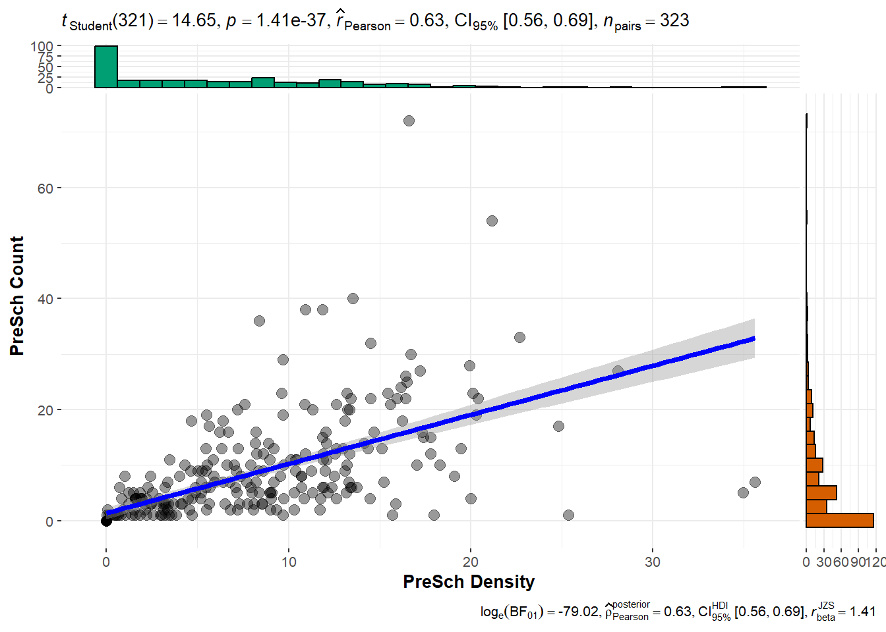
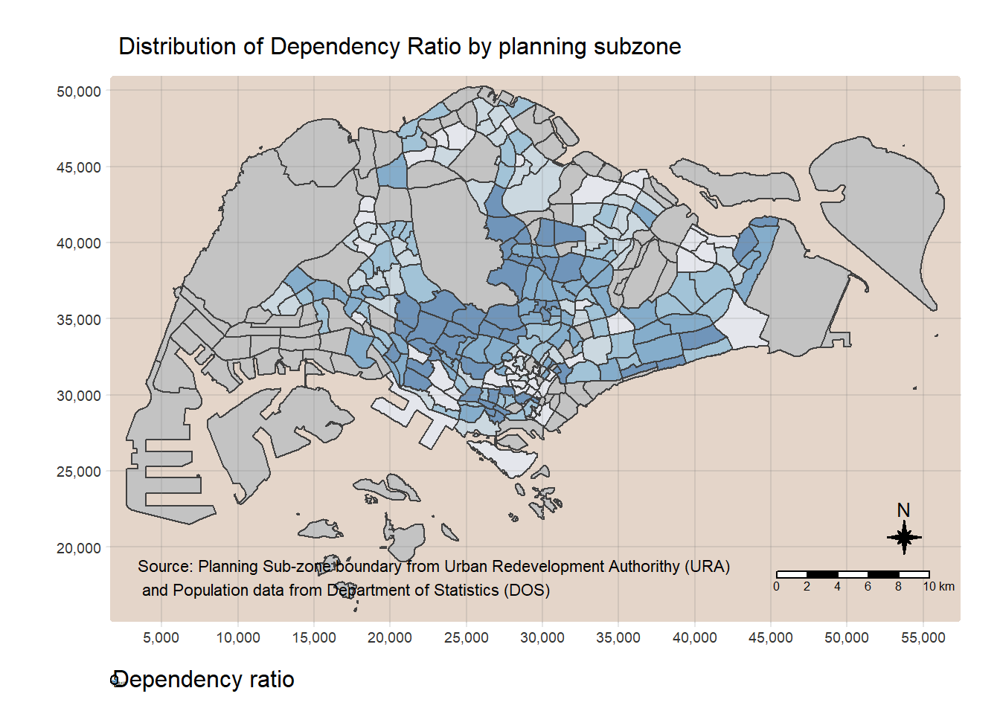
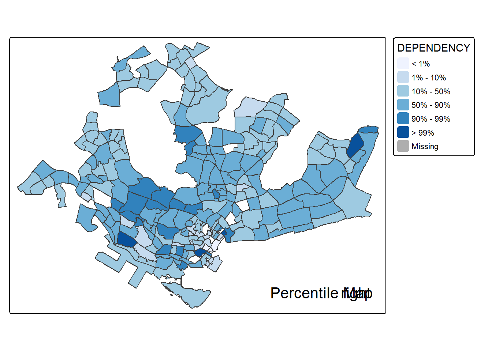
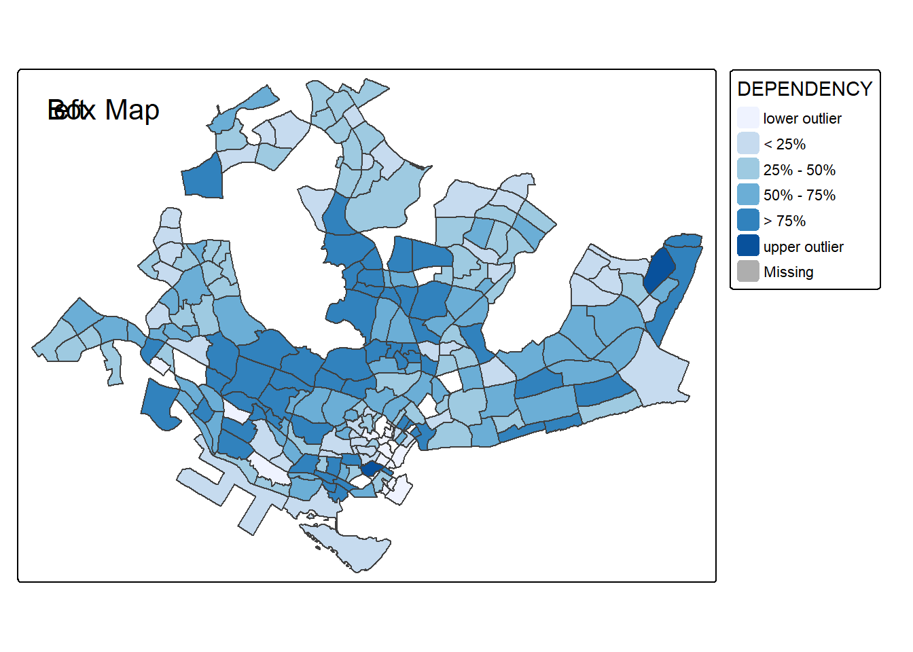

code chunk
pacman::p_load(sf, tidyverse, tmap, ggstatsplot)Shubham Sinha
August 30, 2024
September 13, 2025
Loading following packages in R environment
We’ll create a sub-folder called data in in_class_ex01 folder. Then download Master Plan 2014 Subzone Boundary (Web) from data.gov.sg and placed it inside the folder.
Import downloaded shapefile:
Reading layer `MP14_SUBZONE_WEB_PL' from data source
`D:\ssinha8752\ISSS608-VAA\In-class_Ex\In-class_Ex01\data'
using driver `ESRI Shapefile'
Simple feature collection with 323 features and 15 fields
Geometry type: MULTIPOLYGON
Dimension: XY
Bounding box: xmin: 2667.538 ymin: 15748.72 xmax: 56396.44 ymax: 50256.33
Projected CRS: SVY21Import downloaded KML file:
Reading layer `MP14_SUBZONE_WEB_PL' from data source
`D:\ssinha8752\ISSS608-VAA\In-class_Ex\In-class_Ex01\data\MP14_SUBZONE_WEB_PL.kml'
using driver `KML'
Simple feature collection with 323 features and 2 fields
Geometry type: MULTIPOLYGON
Dimension: XY
Bounding box: xmin: 103.6057 ymin: 1.158699 xmax: 104.0885 ymax: 1.470775
Geodetic CRS: WGS 84Download Pre-Schools Location from data.gov.sg and placed it inside data folder.
Reading layer `PRESCHOOLS_LOCATION' from data source
`D:\ssinha8752\ISSS608-VAA\In-class_Ex\In-class_Ex01\data\PreSchoolsLocation.kml'
using driver `KML'
Simple feature collection with 2290 features and 2 fields
Geometry type: POINT
Dimension: XYZ
Bounding box: xmin: 103.6878 ymin: 1.247759 xmax: 103.9897 ymax: 1.462134
z_range: zmin: 0 zmax: 0
Geodetic CRS: WGS 84Reading layer `PRESCHOOLS_LOCATION' from data source
`D:\ssinha8752\ISSS608-VAA\In-class_Ex\In-class_Ex01\data\PreSchoolsLocation.kml'
using driver `KML'
Simple feature collection with 2290 features and 2 fields
Geometry type: POINT
Dimension: XYZ
Bounding box: xmin: 103.6878 ymin: 1.247759 xmax: 103.9897 ymax: 1.462134
z_range: zmin: 0 zmax: 0
Geodetic CRS: WGS 84Download Master Plan 2014 Subzone Boundary (No Sea) from data.gov.sg and placed it inside data folder.
Reading layer `MP14_SUBZONE_WEB_PL' from data source
`D:\ssinha8752\ISSS608-VAA\In-class_Ex\In-class_Ex01\data'
using driver `ESRI Shapefile'
Simple feature collection with 323 features and 15 fields
Geometry type: MULTIPOLYGON
Dimension: XY
Bounding box: xmin: 2667.538 ymin: 15748.72 xmax: 56396.44 ymax: 50256.33
Projected CRS: SVY21Reading layer `URA_MP19_SUBZONE_NO_SEA_PL' from data source
`D:\ssinha8752\ISSS608-VAA\In-class_Ex\In-class_Ex01\data\MasterPlan2019SubzoneBoundaryNoSeaKML.kml'
using driver `KML'
Simple feature collection with 332 features and 2 fields
Geometry type: MULTIPOLYGON
Dimension: XY
Bounding box: xmin: 103.6057 ymin: 1.158699 xmax: 104.0885 ymax: 1.470775
Geodetic CRS: WGS 84Check the project for the imported sf objects.
Coordinate Reference System:
User input: SVY21
wkt:
PROJCRS["SVY21",
BASEGEOGCRS["SVY21[WGS84]",
DATUM["World Geodetic System 1984",
ELLIPSOID["WGS 84",6378137,298.257223563,
LENGTHUNIT["metre",1]],
ID["EPSG",6326]],
PRIMEM["Greenwich",0,
ANGLEUNIT["Degree",0.0174532925199433]]],
CONVERSION["unnamed",
METHOD["Transverse Mercator",
ID["EPSG",9807]],
PARAMETER["Latitude of natural origin",1.36666666666667,
ANGLEUNIT["Degree",0.0174532925199433],
ID["EPSG",8801]],
PARAMETER["Longitude of natural origin",103.833333333333,
ANGLEUNIT["Degree",0.0174532925199433],
ID["EPSG",8802]],
PARAMETER["Scale factor at natural origin",1,
SCALEUNIT["unity",1],
ID["EPSG",8805]],
PARAMETER["False easting",28001.642,
LENGTHUNIT["metre",1],
ID["EPSG",8806]],
PARAMETER["False northing",38744.572,
LENGTHUNIT["metre",1],
ID["EPSG",8807]]],
CS[Cartesian,2],
AXIS["(E)",east,
ORDER[1],
LENGTHUNIT["metre",1,
ID["EPSG",9001]]],
AXIS["(N)",north,
ORDER[2],
LENGTHUNIT["metre",1,
ID["EPSG",9001]]]]The CRS of mpsz14 is in WGS 84, which is a Geographical Coordinate System, useful in GPS to pinpoint a specific location, and the unit of measurement is in decimal degree. However, it is not suitable for geospatial analysis as the distance measurement of decimal degree is distorted. We will transform it from geographic coordinate system to projected coordinate system.
Reading layer `MP14_SUBZONE_WEB_PL' from data source
`D:\ssinha8752\ISSS608-VAA\In-class_Ex\In-class_Ex01\data'
using driver `ESRI Shapefile'
Simple feature collection with 323 features and 15 fields
Geometry type: MULTIPOLYGON
Dimension: XY
Bounding box: xmin: 2667.538 ymin: 15748.72 xmax: 56396.44 ymax: 50256.33
Projected CRS: SVY21Reading layer `PRESCHOOLS_LOCATION' from data source
`D:\ssinha8752\ISSS608-VAA\In-class_Ex\In-class_Ex01\data\PreSchoolsLocation.kml'
using driver `KML'
Simple feature collection with 2290 features and 2 fields
Geometry type: POINT
Dimension: XYZ
Bounding box: xmin: 103.6878 ymin: 1.247759 xmax: 103.9897 ymax: 1.462134
z_range: zmin: 0 zmax: 0
Geodetic CRS: WGS 84We’ll need to count the number of pre-schools in each planning sub-zone.
Then to compute the density of pre-school at the planning sub-zone level
Using appropriate Exploratory Data Analysis (EDA) and Confirmatory Data Analysis (CDA) methods to explore and confirm the statistical relationship between Pre-school Density and Pre-school count.
mpsz14_shp$`PreSch Density` <- as.numeric(as.character(mpsz14_shp$`PreSch Density`))
mpsz14_shp$`PreSch Count` <- as.numeric(as.character(mpsz14_shp$`PreSch Count`))
mpsz14_shp_df <- as.data.frame(mpsz14_shp)
ggscatterstats(data = mpsz14_shp_df,
x = `PreSch Density`,
y = `PreSch Count`,
type = "parametric")Registered S3 method overwritten by 'ggside':
method from
+.gg ggplot2`stat_xsidebin()` using `bins = 30`. Pick better value with `binwidth`.
`stat_ysidebin()` using `bins = 30`. Pick better value with `binwidth`.
Download latest Singapore Residents by Planning Area / Subzone, Age Group, Sex and Type of Dwelling from Department of Statistics, Singapore and placed it inside data folder.
Rows: 100928 Columns: 7
── Column specification ────────────────────────────────────────────────────────
Delimiter: ","
chr (5): PA, SZ, AG, Sex, TOD
dbl (2): Pop, Time
ℹ Use `spec()` to retrieve the full column specification for this data.
ℹ Specify the column types or set `show_col_types = FALSE` to quiet this message.Prepare the data to show population by Planning Area and Planning subzone
`summarise()` has grouped output by 'PA', 'SZ'. You can override using the
`.groups` argument. [1] "PA" "SZ" "0_to_4" "10_to_14" "15_to_19"
[6] "20_to_24" "25_to_29" "30_to_34" "35_to_39" "40_to_44"
[11] "45_to_49" "50_to_54" "55_to_59" "5_to_9" "60_to_64"
[16] "65_to_69" "70_to_74" "75_to_79" "80_to_84" "85_to_89"
[21] "90_and_over"Prepare a new data table. The data table would include following variables: - YOUNG: age group 0 to 4 until age group 20 to 24, - ECONOMY ACTIVE: age group 25-29 until age group 60-64, - AGED: age group 65 and above, - TOTAL: all age group, and - DEPENDENCY: the ratio between young and aged against economy active group
popdata2024 <- popdata2024 %>%
mutate(YOUNG=rowSums(.[3:6]) # Aged 0 - 24, 10 - 24
+rowSums(.[14])) %>% # Aged 5 - 9
mutate(`ECONOMY ACTIVE` = rowSums(.[7:13])+ # Aged 25 - 59
rowSums(.[15])) %>% # Aged 60 -64
mutate(`AGED`=rowSums(.[16:21])) %>%
mutate(`TOTAL`=rowSums(.[3:21])) %>%
mutate(`DEPENDENCY`=(`YOUNG` + `AGED`)
/ `ECONOMY ACTIVE`) %>%
select(`PA`, `SZ`, `YOUNG`,
`ECONOMY ACTIVE`, `AGED`,
`TOTAL`, `DEPENDENCY`)tm_shape(mpsz_pop2024) +
tm_fill("DEPENDENCY",
style = "quantile",
palette = "Blues",
title = "Dependency ratio") +
tm_layout(main.title = "Distribution of Dependency Ratio by planning subzone",
main.title.position = "center",
main.title.size = 1,
legend.title.size = 1,
legend.height = 0.45,
legend.width = 0.35,
bg.color = "#E4D5C9",
frame = F) +
tm_borders(alpha = 0.5) +
tm_compass(type="8star", size = 1.5) +
tm_scale_bar() +
tm_grid(alpha =0.2) +
tm_credits("Source: Planning Sub-zone boundary from Urban Redevelopment Authorithy (URA)\n and Population data from Department of Statistics (DOS)",
position = c("left", "bottom"))── tmap v3 code detected ───────────────────────────────────────────────────────[v3->v4] `tm_fill()`: instead of `style = "quantile"`, use fill.scale =
`tm_scale_intervals()`.
ℹ Migrate the argument(s) 'style', 'palette' (rename to 'values') to
'tm_scale_intervals(<HERE>)'
[v3->v4] `tm_fill()`: migrate the argument(s) related to the legend of the
visual variable `fill` namely 'title' to 'fill.legend = tm_legend(<HERE>)'
[v3->v4] `tm_layout()`: use `tm_title()` instead of `tm_layout(main.title = )`
[v3->v4] `tm_borders()`: use 'fill' for the fill color of polygons/symbols
(instead of 'col'), and 'col' for the outlines (instead of 'border.col').
[v3->v4] `tm_borders()`: use `fill_alpha` instead of `alpha`.
! `tm_scale_bar()` is deprecated. Please use `tm_scalebar()` instead.
[cols4all] color palettes: use palettes from the R package cols4all. Run
`cols4all::c4a_gui()` to explore them. The old palette name "Blues" is named
"brewer.blues"
Multiple palettes called "blues" found: "brewer.blues", "matplotlib.blues". The first one, "brewer.blues", is returned.
The percentile map is a specialized form of a quantile map that divides data into six distinct categories: 0-1%, 1-10%, 10-50%, 50-90%, 90-99%, and 99-100%. The breakpoints for these categories can be determined using the base R quantile function, specifying a vector of cumulative probabilities as c(0, 0.01, 0.1, 0.5, 0.9, 0.99, 1). It’s important to include both the starting and ending points in this vector.
Firstly, we’ll exclude records with NA
Defines a function to get the input data and field to be used for creating the percentile map.
Define function for computing and plotting the percentile map.
percentmap <- function(vnam, df, legtitle=NA, mtitle="Percentile Map"){
percent <- c(0,.01,.1,.5,.9,.99,1)
var <- get.var(vnam, df)
bperc <- quantile(var, percent)
tm_shape(mpsz_pop2024) +
tm_polygons() +
tm_shape(df) +
tm_fill(vnam,
title=legtitle,
breaks=bperc,
palette="Blues",
labels=c("< 1%", "1% - 10%", "10% - 50%", "50% - 90%", "90% - 99%", "> 99%")) +
tm_borders() +
tm_layout(main.title = mtitle,
title.position = c("right","bottom"))
}Let’s run the newly created percentile map function.
── tmap v3 code detected ───────────────────────────────────────────────────────[v3->v4] `tm_tm_fill()`: migrate the argument(s) related to the scale of the
visual variable `fill` namely 'breaks', 'palette' (rename to 'values'),
'labels' to fill.scale = tm_scale(<HERE>).
[v3->v4] `tm_fill()`: migrate the argument(s) related to the legend of the
visual variable `fill` namely 'title' to 'fill.legend = tm_legend(<HERE>)'
[v3->v4] `tm_layout()`: use `tm_title()` instead of `tm_layout(title = )`
[v3->v4] `tm_layout()`: use `tm_title()` instead of `tm_layout(main.title = )`
[cols4all] color palettes: use palettes from the R package cols4all. Run
`cols4all::c4a_gui()` to explore them. The old palette name "Blues" is named
"brewer.blues"
Multiple palettes called "blues" found: "brewer.blues", "matplotlib.blues". The first one, "brewer.blues", is returned.
A box map is an augmented quartile map, with an additional lower and upper category. When there are lower outliers, then the starting point for the breaks is the minimum value, and the second break is the lower fence. In contrast, when there are no lower outliers, then the starting point for the breaks will be the lower fence, and the second break is the minimum value (there will be no observations that fall in the interval between the lower fence and the minimum value).
Let’s define an R function that creating break points for a box map. The function accepts following arguments: - v: vector with observations - mult: multiplier for IQR (default 1.5)
The function returns: - bb: vector with 7 break points compute quartile and fences
boxbreaks <- function(v,mult=1.5) {
qv <- unname(quantile(v))
iqr <- qv[4] - qv[2]
upfence <- qv[4] + mult * iqr
lofence <- qv[2] - mult * iqr
# initialize break points vector
bb <- vector(mode="numeric",length=7)
# logic for lower and upper fences
if (lofence < qv[1]) { # no lower outliers
bb[1] <- lofence
bb[2] <- floor(qv[1])
} else {
bb[2] <- lofence
bb[1] <- qv[1]
}
if (upfence > qv[5]) { # no upper outliers
bb[7] <- upfence
bb[6] <- ceiling(qv[5])
} else {
bb[6] <- upfence
bb[7] <- qv[5]
}
bb[3:5] <- qv[2:4]
return(bb)
}We’ll reuse the get.var function that we’ve initialized earlier
Let’s define an R function to create a box map.
arguments:
returns:
boxmap <- function(vnam, df,
legtitle=NA,
mtitle="Box Map",
mult=1.5){
var <- get.var(vnam,df)
bb <- boxbreaks(var)
tm_shape(df) +
tm_polygons() +
tm_shape(df) +
tm_fill(vnam,title=legtitle,
breaks=bb,
palette="Blues",
labels = c("lower outlier",
"< 25%",
"25% - 50%",
"50% - 75%",
"> 75%",
"upper outlier")) +
tm_borders() +
tm_layout(main.title = mtitle,
title.position = c("left",
"top"))
}Let’s use the functions to plot boxmap
── tmap v3 code detected ───────────────────────────────────────────────────────[v3->v4] `tm_tm_fill()`: migrate the argument(s) related to the scale of the
visual variable `fill` namely 'breaks', 'palette' (rename to 'values'),
'labels' to fill.scale = tm_scale(<HERE>).
[v3->v4] `tm_fill()`: migrate the argument(s) related to the legend of the
visual variable `fill` namely 'title' to 'fill.legend = tm_legend(<HERE>)'
[v3->v4] `tm_layout()`: use `tm_title()` instead of `tm_layout(title = )`
[v3->v4] `tm_layout()`: use `tm_title()` instead of `tm_layout(main.title = )`
[cols4all] color palettes: use palettes from the R package cols4all. Run
`cols4all::c4a_gui()` to explore them. The old palette name "Blues" is named
"brewer.blues"
Multiple palettes called "blues" found: "brewer.blues", "matplotlib.blues". The first one, "brewer.blues", is returned.
Kam, T. S. In-class Exercise 1: Geospatial Data Science with R. ISSS626 Geospatial Analytics and Applications. https://isss626-ay2024-25aug.netlify.app/in-class_ex/in-class_ex01/in-class_ex01